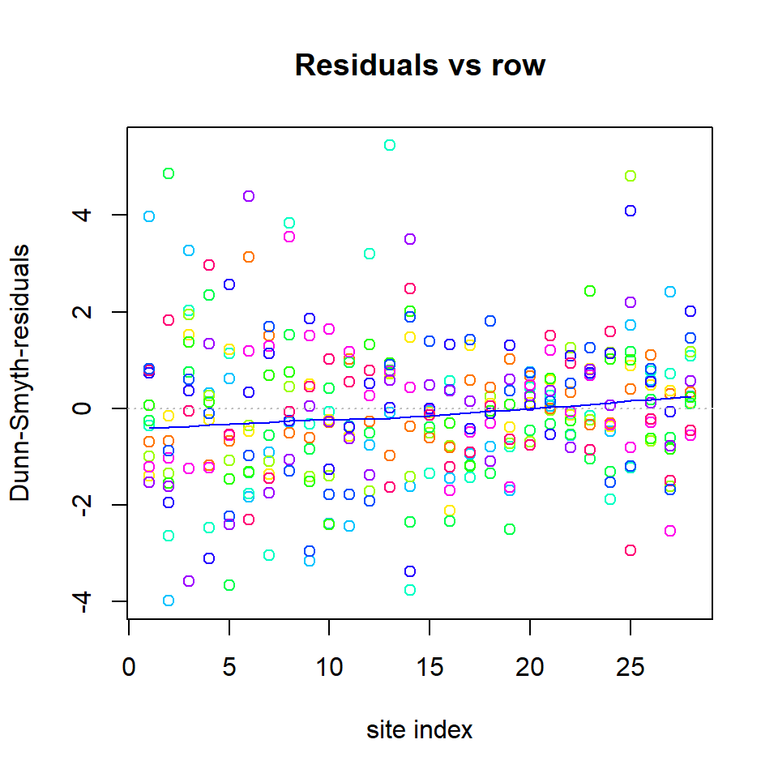
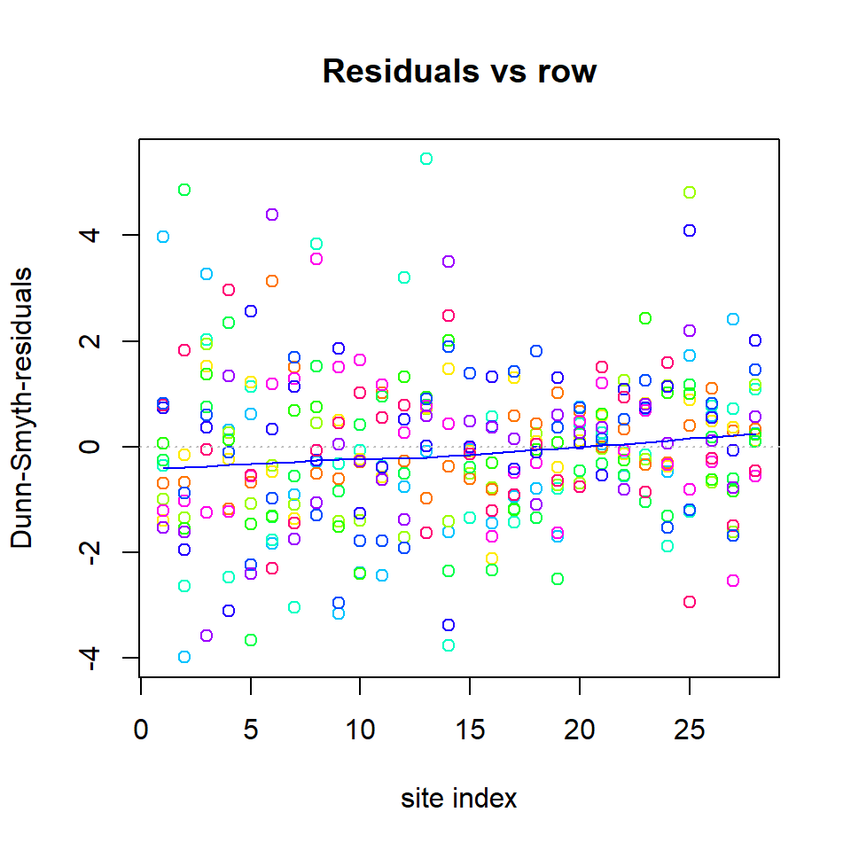
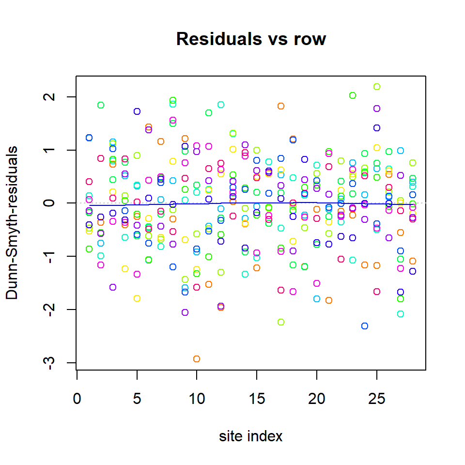
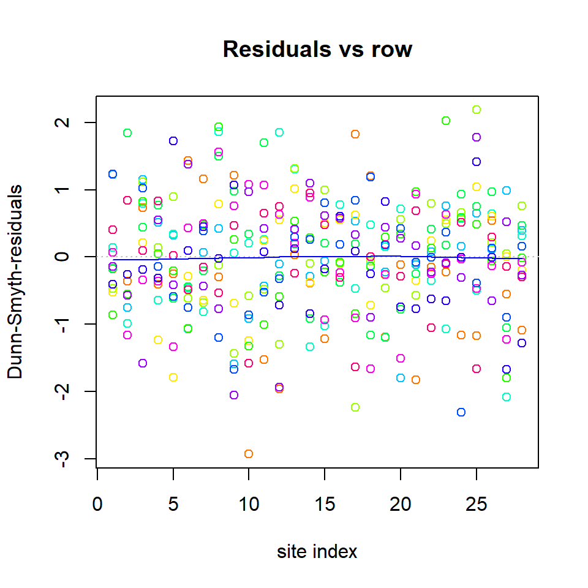

Introduction to gllvm Part 1: Ordination
Jenni Niku
2020-12-14
Source:vignettes/vignette3.rmd
vignette3.rmdIntroduction to gllvm
R package gllvm
R package gllvm fits Generalized linear latent variable models (GLLVM) for multivariate data1.
Developed by J. Niku, W.Brooks, R. Herliansyah, F.K.C. Hui, S. Taskinen, D.I. Warton, B. van der Veen.
-
Version 1.2.3 now available in
Package installation:
# From CRAN
install.packages(gllvm)
# OR
# From GitHub using devtools package's function install_github
devtools::install_github("JenniNiku/gllvm") Problems?
gllvm package depends on R packages TMB and mvabund, try to install these first.
GLLVMs are computationally intensive to fit due the integral in log-likelihood.
Often such models have been fitted using MCMC approach, which is very time consuming.
gllvm package overcomes computational problems by applying closed form approximations to log-likelihood and using automatic differentiation in C++ to accelerate computation times (TMB2).
Estimation is performed using either variational approximation (VA3) or Laplace approximation (LA4) method implemented via R package TMB.
VA method is faster and more accurate than LA, but not applicable for all distributions and link functions.
-
Using gllvm we can fit
- GLLVM without covariates gives model-based ordination and biplots
- GLLVM with environmental covariates for studying factors explaining species abundance
- Fourth corner models with latent variables for studying environmental-trait interactions
- GLLVM without latent variables fits basic multivariate GLMs
Additional tools: model checking, model selection, inference, visualization.
Distributions
| Response | Distribution | Method | Link |
|---|---|---|---|
| Counts | Poisson | VA/LA | log |
| NB | VA/LA | log | |
| ZIP | LA | log | |
| Binary | Bernoulli | VA/LA | probit |
| LA | logit | ||
| Ordinal | Ordinal | VA | probit |
| Normal | Gaussian | VA/LA | identity |
| Positive continuous | Gamma | VA/LA | log |
| non-negative continuous | Exponential | VA/LA | log |
| Biomass | Tweedie | LA | log |
Data input
Main function of the gllvm package is gllvm(), which can be used to fit GLLVMs for multivariate data with the most important arguments listed in the following:
gllvm(y = NULL, X = NULL, TR = NULL, family, num.lv = 2,
formula = NULL, method = "VA", row.eff = FALSE, n.init=1, starting.val ="res", ...)- y: matrix of abundances
- X: matrix or data.frame of environmental variables
- TR: matrix or data.frame of trait variables
- family: distribution for responses
- num.lv: number of latent variables
- method: approximation used “VA” or “LA”
- row.eff: type of row effects
- n.init: number of random starting points for latent variables
- starting.val: starting value method
Example: Spiders
- Abundances of 12 hunting spider species measured as a count at 28 sites5.
- Six environmental variables measured at each site.
-
soil.dry: Soil dry mass -
bare.sand: cover of bare sand -
fallen.leaves: cover of fallen leaves/twigs -
moss: cover of moss -
herb.layer: cover of herb layer -
reflection: reflection of the soil surface with a cloudless sky
-
Data fitting
Fitting basic GLLVM \(g(E(y_{ij})) = \beta_{0j} + \boldsymbol{u}_i'\boldsymbol{\theta}_j\) with gllvm:
library(mvabund)
data("spider")
library(gllvm)
fitnb <- gllvm(y = spider$abund, family = "negative.binomial")
fitnb
## Call:
## gllvm(y = spider$abund, family = "negative.binomial")
## family:
## [1] "negative.binomial"
## method:
## [1] "VA"
##
## log-likelihood: -733.6806
## Residual degrees of freedom: 289
## AIC: 1561.361
## AICc: 1335.761
## BIC: 1623.975Residual analysis
Residual analysis can be used to assess the appropriateness of the fitted model (eg. in terms of mean-variance relationship).
Randomized quantile/Dunn-Smyth residuals6 are used in the package, as they provide standard normal distributed residuals, even for discrete responses, in the case of a proper model.

Exercises
Try to do these exercises for the next 10 minutes, as many as time is enough for.
E1. Load spider data from mvabund package and take a look at the dataset.
library(gllvm)
#Package **mvabund** is loaded with **gllvm** so just load with a function `data()`.
data("spider")
# more info:
# ?spider Show me the answers.
1. Print the data and covariates and draw a boxplot of the data.
# response matrix:
spider$abund
## Alopacce Alopcune Alopfabr Arctlute Arctperi Auloalbi Pardlugu Pardmont
## 1 25 10 0 0 0 4 0 60
## 2 0 2 0 0 0 30 1 1
## 3 15 20 2 2 0 9 1 29
## 4 2 6 0 1 0 24 1 7
## 5 1 20 0 2 0 9 1 2
## 6 0 6 0 6 0 6 0 11
## 7 2 7 0 12 0 16 1 30
## 8 0 11 0 0 0 7 55 2
## 9 1 1 0 0 0 0 0 26
## 10 3 0 1 0 0 0 0 22
## 11 15 1 2 0 0 1 0 95
## 12 16 13 0 0 0 0 0 96
## 13 3 43 1 2 0 18 1 24
## 14 0 2 0 1 0 4 3 14
## 15 0 0 0 0 0 0 6 0
## 16 0 3 0 0 0 0 6 0
## 17 0 0 0 0 0 0 2 0
## 18 0 1 0 0 0 0 5 0
## 19 0 1 0 0 0 0 12 0
## 20 0 2 0 0 0 0 13 0
## 21 0 1 0 0 0 0 16 1
## 22 7 0 16 0 4 0 0 2
## 23 17 0 15 0 7 0 2 6
## 24 11 0 20 0 5 0 0 3
## 25 9 1 9 0 0 2 1 11
## 26 3 0 6 0 18 0 0 0
## 27 29 0 11 0 4 0 0 1
## 28 15 0 14 0 1 0 0 6
## Pardnigr Pardpull Trocterr Zoraspin
## 1 12 45 57 4
## 2 15 37 65 9
## 3 18 45 66 1
## 4 29 94 86 25
## 5 135 76 91 17
## 6 27 24 63 34
## 7 89 105 118 16
## 8 2 1 30 3
## 9 1 1 2 0
## 10 0 0 1 0
## 11 0 1 4 0
## 12 1 8 13 0
## 13 53 72 97 22
## 14 15 72 94 32
## 15 0 0 25 3
## 16 2 0 28 4
## 17 0 0 23 2
## 18 0 0 25 0
## 19 1 0 22 3
## 20 0 0 22 2
## 21 0 1 18 2
## 22 0 0 1 0
## 23 0 0 1 0
## 24 0 0 0 0
## 25 6 0 16 6
## 26 0 0 1 0
## 27 0 0 0 0
## 28 0 0 2 0
# Environmental variables
spider$x
## soil.dry bare.sand fallen.leaves moss herb.layer reflection
## [1,] 2.3321 0.0000 0.0000 3.0445 4.4543 3.9120
## [2,] 3.0493 0.0000 1.7918 1.0986 4.5643 1.6094
## [3,] 2.5572 0.0000 0.0000 2.3979 4.6052 3.6889
## [4,] 2.6741 0.0000 0.0000 2.3979 4.6151 2.9957
## [5,] 3.0155 0.0000 0.0000 0.0000 4.6151 2.3026
## [6,] 3.3810 2.3979 3.4340 2.3979 3.4340 0.6931
## [7,] 3.1781 0.0000 0.0000 0.6931 4.6151 2.3026
## [8,] 2.6247 0.0000 4.2627 1.0986 3.4340 0.6931
## [9,] 2.4849 0.0000 0.0000 4.3307 3.2581 3.4012
## [10,] 2.1972 3.9318 0.0000 3.4340 3.0445 3.6889
## [11,] 2.2192 0.0000 0.0000 4.1109 3.7136 3.6889
## [12,] 2.2925 0.0000 0.0000 3.8286 4.0254 3.6889
## [13,] 3.5175 1.7918 1.7918 0.6931 4.5109 3.4012
## [14,] 3.0865 0.0000 0.0000 1.7918 4.5643 1.0986
## [15,] 3.2696 0.0000 4.3944 0.6931 3.0445 0.6931
## [16,] 3.0301 0.0000 4.6052 0.6931 0.6931 0.0000
## [17,] 3.3322 0.0000 4.4543 0.6931 3.0445 1.0986
## [18,] 3.1224 0.0000 4.3944 0.0000 3.0445 1.0986
## [19,] 2.9232 0.0000 4.5109 1.6094 1.6094 0.0000
## [20,] 3.1091 0.0000 4.5951 0.6931 0.6931 0.0000
## [21,] 2.9755 0.0000 4.5643 0.6931 1.7918 0.0000
## [22,] 1.2528 3.2581 0.0000 4.3307 0.6931 3.9120
## [23,] 1.1939 3.0445 0.0000 4.0254 3.2581 4.0943
## [24,] 1.6487 3.2581 0.0000 4.0254 3.0445 4.0073
## [25,] 1.8245 3.5835 0.0000 1.0986 4.1109 2.3026
## [26,] 0.9933 4.5109 0.0000 1.7918 1.7918 4.3820
## [27,] 0.9555 2.3979 0.0000 3.8286 3.4340 3.6889
## [28,] 0.9555 3.4340 0.0000 3.7136 3.4340 3.6889
# Plot data using boxplot:
boxplot(spider$abund)
E2. Fit GLLVM to spider data with a suitable distribution. Data consists of counts of spider species.
# Take a look at the function documentation for help:
?gllvm Show me the answers.
2. Response variables in spider data are counts, so Poisson, negative binomial and zero inflated Poisson are possible. However, ZIP is implemented only with Laplace method, so it need to be noticed, that if models are fitted with different methods they can not be compared with information criterias. Let’s try just with a Poisson and NB. NOTE THAT the results may not be exactly the same as below, as the initial values for each model fit are slightly different, so the results may also differ slightly.
# Fit a GLLVM to data
fitp <- gllvm(y=spider$abund, family = poisson())
fitp
## Call:
## gllvm(y = spider$abund, family = poisson())
## family:
## [1] "poisson"
## method:
## [1] "VA"
##
## log-likelihood: -845.8277
## Residual degrees of freedom: 301
## AIC: 1761.655
## AICc: 1446.655
## BIC: 1808.283
fitnb <- gllvm(y=spider$abund, family = "negative.binomial")
fitnb
## Call:
## gllvm(y = spider$abund, family = "negative.binomial")
## family:
## [1] "negative.binomial"
## method:
## [1] "VA"
##
## log-likelihood: -733.6806
## Residual degrees of freedom: 289
## AIC: 1561.361
## AICc: 1335.761
## BIC: 1623.975Based on AIC, NB distribution suits better. How about residual analysis: NOTE THAT The package uses randomized quantile residuals so each time you plot the residuals, they look a little different.
# Fit a GLLVM to data
plot(fitp)
 


plot(fitnb)
 


You could do these comparisons with Laplace method as well, using the code below, and it would give the same conclusion that NB distribution suits best:
E3. Explore the fitted model. Where are the estimates for parameters? What about predicted latent variables? Standard errors?
Show me the answers.
3. Lets explore the fitted model:
# Parameters:
coef(fitnb)
## $theta
## LV1 LV2
## Alopacce 1.8031514 0.00000000
## Alopcune -0.4744826 1.82928456
## Alopfabr 1.6256865 -0.88549085
## Arctlute -1.2687977 3.71414540
## Arctperi 1.0710793 -2.90769625
## Auloalbi -1.1769060 2.80450235
## Pardlugu -1.6023266 -0.05128999
## Pardmont 1.3520467 1.07642773
## Pardnigr -1.0365884 3.25660365
## Pardpull -0.7477329 3.56359970
## Trocterr -0.8465117 1.44147090
## Zoraspin -1.2557773 2.11643939
##
## $Intercept
## Alopacce Alopcune Alopfabr Arctlute Arctperi Auloalbi Pardlugu
## 0.7740665 0.5515650 -0.1421283 -3.5926395 -3.3663918 -0.7310372 0.3187380
## Pardmont Pardnigr Pardpull Trocterr Zoraspin
## 1.6248388 -0.2754659 -0.1349465 2.6557424 0.2459899
##
## $inv.phi
## Alopacce Alopcune Alopfabr Arctlute Arctperi Auloalbi Pardlugu
## 1.3062334 1.4686346 0.7051158 0.8975794 2.3317318 1.5391828 1.1528547
## Pardmont Pardnigr Pardpull Trocterr Zoraspin
## 1.6178675 2.5411154 2.1962447 12.9781058 2.5728507
##
## $phi
## Alopacce Alopcune Alopfabr Arctlute Arctperi Auloalbi Pardlugu
## 0.76555994 0.68090456 1.41820684 1.11410758 0.42886579 0.64969540 0.86741200
## Pardmont Pardnigr Pardpull Trocterr Zoraspin
## 0.61809759 0.39352798 0.45532266 0.07705285 0.38867394
# Where are the predicted latent variable values? just fitp$lvs or
getLV(fitnb)
## LV1 LV2
## Row1 0.9285169 1.270450846
## Row2 -0.6826551 0.793768036
## Row3 0.6761884 1.274380980
## Row4 -0.2471635 1.149796355
## Row5 -0.3610523 1.217179001
## Row6 -0.3523326 1.008634292
## Row7 0.0292228 1.425994219
## Row8 -1.5213230 -0.070740398
## Row9 0.9107419 0.001189313
## Row10 1.0373356 -0.493667534
## Row11 1.4886924 0.302937352
## Row12 1.3241322 0.807304138
## Row13 0.1153688 1.356560062
## Row14 -0.4368334 1.014532504
## Row15 -1.3192700 -0.544703408
## Row16 -1.1746947 -0.242730575
## Row17 -1.1125568 -0.512828574
## Row18 -1.1589849 -0.542998619
## Row19 -1.3406842 -0.502805763
## Row20 -1.3673625 -0.592109757
## Row21 -1.1397017 -0.475650639
## Row22 0.7643825 -1.345982994
## Row23 0.9208013 -1.380647473
## Row24 0.9790655 -1.395256306
## Row25 0.6312525 0.576781012
## Row26 0.2740520 -1.964120501
## Row27 1.1155660 -1.309397785
## Row28 1.0188178 -0.825842834
# Standard errors for parameters:
fitnb$sd
## $theta
## LV1 LV2
## Alopacce 0.7506693 0.0000000
## Alopcune 0.4819002 0.7789436
## Alopfabr 0.5666981 0.3636968
## Arctlute 1.1857227 1.4072342
## Arctperi 0.8312998 0.9193225
## Auloalbi 0.7607528 0.6805522
## Pardlugu 0.3544642 0.3660922
## Pardmont 0.3881375 0.2904069
## Pardnigr 0.8199885 0.6446237
## Pardpull 0.8728664 0.6961038
## Trocterr 0.3480352 0.2497385
## Zoraspin 0.5880026 0.4796573
##
## $beta0
## Alopacce Alopcune Alopfabr Arctlute Arctperi Auloalbi Pardlugu Pardmont
## 0.4518314 0.4630217 0.5478138 1.7104398 1.4648058 0.7892862 0.4391402 0.3996829
## Pardnigr Pardpull Trocterr Zoraspin
## 0.7870343 0.8340472 0.3339012 0.5830912
##
## $inv.phi
## Alopacce Alopcune Alopfabr Arctlute Arctperi Auloalbi Pardlugu Pardmont
## 0.6025266 0.6025955 0.3957301 0.5787007 1.8041553 0.8383768 0.5810461 0.7756719
## Pardnigr Pardpull Trocterr Zoraspin
## 1.3150406 1.2472540 6.8924840 1.2851079
##
## $phi
## Alopacce Alopcune Alopfabr Arctlute Arctperi Auloalbi Pardlugu
## 0.35313004 0.27938198 0.79593613 0.71830398 0.33183081 0.35388228 0.43718115
## Pardmont Pardnigr Pardpull Trocterr Zoraspin
## 0.29634129 0.20365281 0.25857912 0.04092165 0.19413795E4. Fit model with different numbers of latent variables.
Show me the answers.
4. Default number of latent variables is 2. Let’s try 1 and 3 latent variables as well:
# In exercise 2, we fitted GLLVM with two latent variables
fitnb
## Call:
## gllvm(y = spider$abund, family = "negative.binomial")
## family:
## [1] "negative.binomial"
## method:
## [1] "VA"
##
## log-likelihood: -733.6806
## Residual degrees of freedom: 289
## AIC: 1561.361
## AICc: 1335.761
## BIC: 1623.975
# How about 1 or 3 LVs
fitnb1 <- gllvm(y=spider$abund, family = "negative.binomial", num.lv = 1)
fitnb1
## Call:
## gllvm(y = spider$abund, num.lv = 1, family = "negative.binomial")
## family:
## [1] "negative.binomial"
## method:
## [1] "VA"
##
## log-likelihood: -759.4012
## Residual degrees of freedom: 300
## AIC: 1590.802
## AICc: 1294.802
## BIC: 1638.762
getLV(fitnb1)
## [,1]
## Row1 -0.81682909
## Row2 -0.94961178
## Row3 -0.91689323
## Row4 -1.10571183
## Row5 -1.22150122
## Row6 -1.03404995
## Row7 -1.26772563
## Row8 -0.53476040
## Row9 0.36603858
## Row10 1.00890506
## Row11 0.31289454
## Row12 -0.31672589
## Row13 -1.17623143
## Row14 -1.03501285
## Row15 -0.09010937
## Row16 -0.27460241
## Row17 -0.02447915
## Row18 -0.02081396
## Row19 -0.12970987
## Row20 -0.06890369
## Row21 -0.04324800
## Row22 1.54081612
## Row23 1.65023787
## Row24 1.68378344
## Row25 -0.28903228
## Row26 1.92917613
## Row27 1.62337929
## Row28 1.20017783
fitnb3 <- gllvm(y=spider$abund, family = "negative.binomial", num.lv = 3)
fitnb3
## Call:
## gllvm(y = spider$abund, num.lv = 3, family = "negative.binomial")
## family:
## [1] "negative.binomial"
## method:
## [1] "VA"
##
## log-likelihood: -733.6806
## Residual degrees of freedom: 279
## AIC: 1581.361
## AICc: 1360.961
## BIC: 1657.297
getLV(fitnb3)
## LV1 LV2 LV3
## Row1 0.9285059 1.270447968 -2.285365e-06
## Row2 -0.6826595 0.793743251 -3.194909e-06
## Row3 0.6762097 1.274386361 -9.795229e-07
## Row4 -0.2471740 1.149773329 -2.496243e-06
## Row5 -0.3610297 1.217167172 8.436259e-07
## Row6 -0.3523450 1.008610886 4.587742e-07
## Row7 0.0292040 1.425970730 -9.887348e-07
## Row8 -1.5213003 -0.070756800 1.263579e-06
## Row9 0.9107318 0.001201124 1.191958e-06
## Row10 1.0373937 -0.493643618 9.245370e-07
## Row11 1.4887040 0.302967987 1.746670e-07
## Row12 1.3241481 0.807322981 2.187649e-06
## Row13 0.1153601 1.356544161 1.384837e-06
## Row14 -0.4368090 1.014521779 -1.245436e-06
## Row15 -1.3192628 -0.544721949 -9.217079e-07
## Row16 -1.1746736 -0.242741957 7.507792e-07
## Row17 -1.1125299 -0.512836673 -9.416256e-07
## Row18 -1.1589684 -0.543012923 -5.650638e-07
## Row19 -1.3406560 -0.502818167 -8.962783e-08
## Row20 -1.3673365 -0.592121726 2.072739e-07
## Row21 -1.1396797 -0.475657380 -3.965902e-07
## Row22 0.7643640 -1.345996747 1.053944e-06
## Row23 0.9207859 -1.380639951 4.777901e-07
## Row24 0.9790167 -1.395277327 1.102220e-06
## Row25 0.6312578 0.576789769 1.561925e-06
## Row26 0.2740788 -1.964106940 7.372785e-07
## Row27 1.1155762 -1.309365714 -9.320572e-08
## Row28 1.0188371 -0.825846036 5.173810e-07E5. Include environmental variables to the GLLVM and explore the model fit.
Show me the answers.
5. Environmental variables can be included with an argument X:
fitnbx <- gllvm(y = spider$abund, X = spider$x, family = "negative.binomial", seed = 123)
fitnbx
## Call:
## gllvm(y = spider$abund, X = spider$x, family = "negative.binomial",
## seed = 123)
## family:
## [1] "negative.binomial"
## method:
## [1] "VA"
##
## log-likelihood: -593.6748
## Residual degrees of freedom: 217
## AIC: 1425.35
## AICc: 1114.915
## BIC: 1583.882
coef(fitnbx)
## $theta
## LV1 LV2
## Alopacce -2.857411e-05 0.0000000000
## Alopcune -3.364354e-05 0.9498628409
## Alopfabr -9.236582e-06 0.5548544521
## Arctlute -2.651639e-05 1.0940922953
## Arctperi -5.471657e-08 -0.0000010232
## Auloalbi -1.447623e-06 0.5788043838
## Pardlugu -5.180074e-06 0.1862217519
## Pardmont -1.677534e-04 0.3456790927
## Pardnigr 1.271596e-06 1.0171849880
## Pardpull 6.436834e-06 0.6918335333
## Trocterr 4.155694e-06 0.4740714782
## Zoraspin -1.022385e-05 0.7002470632
##
## $Intercept
## Alopacce Alopcune Alopfabr Arctlute Arctperi Auloalbi
## -1.8115846 -4.4221538 -1.6467848 -14.6909804 -14.9068792 -15.7078674
## Pardlugu Pardmont Pardnigr Pardpull Trocterr Zoraspin
## 7.9321462 -6.3806396 -5.1512422 -13.0250653 -0.1991127 -3.8428976
##
## $Xcoef
## soil.dry bare.sand fallen.leaves moss herb.layer
## Alopacce -0.9580917 -0.09053501 -0.32437870 0.10124830 0.73709816
## Alopcune 1.3486217 -0.45043066 0.01723449 -0.19956194 0.41944089
## Alopfabr -0.8696202 0.69568422 -0.40334074 0.54005485 0.30219663
## Arctlute 5.8737292 0.16582375 -1.67250406 0.34341929 -0.12446463
## Arctperi -1.7806178 0.23888247 -2.29890220 0.49589027 0.02138282
## Auloalbi 0.2244429 -0.04649283 0.62826104 0.06229317 4.05006017
## Pardlugu -2.5235145 -0.71539971 0.36222082 -0.37421097 0.58640370
## Pardmont 1.5849363 0.13318830 -0.51418706 0.88729862 0.73435880
## Pardnigr 2.5557162 -0.02690180 -0.84836212 -0.45661271 0.72864799
## Pardpull 3.0006406 -0.35277350 -0.47060433 0.36456002 1.95079398
## Trocterr 1.2396780 -0.23027326 -0.22753970 -0.20337996 0.44574655
## Zoraspin 2.0993206 0.11977404 -0.57215580 -0.09014178 0.61992811
## reflection
## Alopacce 0.86931371
## Alopcune 0.42128631
## Alopfabr 0.06205899
## Arctlute -0.64275363
## Arctperi 4.00569398
## Auloalbi -0.54324978
## Pardlugu -1.16960761
## Pardmont 0.07839363
## Pardnigr -0.53345419
## Pardpull -0.36786651
## Trocterr -0.29444820
## Zoraspin -0.93134696
##
## $inv.phi
## Alopacce Alopcune Alopfabr Arctlute Arctperi Auloalbi
## 9.153873e+00 2.937380e+00 7.754048e+00 2.023116e+00 1.459612e+07 1.022598e+01
## Pardlugu Pardmont Pardnigr Pardpull Trocterr Zoraspin
## 2.770991e+01 1.990991e+00 7.671726e+00 1.666766e+01 2.644252e+01 6.323923e+00
##
## $phi
## Alopacce Alopcune Alopfabr Arctlute Arctperi Auloalbi
## 1.092434e-01 3.404394e-01 1.289649e-01 4.942870e-01 6.851134e-08 9.779012e-02
## Pardlugu Pardmont Pardnigr Pardpull Trocterr Zoraspin
## 3.608818e-02 5.022623e-01 1.303488e-01 5.999642e-02 3.781788e-02 1.581297e-01
# confidence intervals for parameters:
confint(fitnbx)
## 2.5 % 97.5 %
## theta.LV1.1 -2.425114e-05 -3.289708e-05
## theta.LV1.2 -2.455706e-01 2.455033e-01
## theta.LV1.3 -1.438815e-01 1.438630e-01
## theta.LV1.4 -2.276144e-01 2.275614e-01
## theta.LV1.5 -9.700736e-05 9.689793e-05
## theta.LV1.6 -1.274331e-01 1.274302e-01
## theta.LV1.7 -7.440569e-02 7.439533e-02
## theta.LV1.8 -4.228947e-01 4.225592e-01
## theta.LV1.9 -1.499938e-01 1.499963e-01
## theta.LV1.10 -1.115521e-01 1.115649e-01
## theta.LV1.11 -1.091085e-01 1.091168e-01
## theta.LV1.12 -2.016467e-01 2.016263e-01
## theta.LV2.1 0.000000e+00 0.000000e+00
## theta.LV2.2 5.578578e-01 1.341868e+00
## theta.LV2.3 1.005535e-01 1.009155e+00
## theta.LV2.4 6.750182e-01 1.513166e+00
## theta.LV2.5 -5.987895e-04 5.967431e-04
## theta.LV2.6 1.934593e-01 9.641494e-01
## theta.LV2.7 -5.581081e-02 4.282543e-01
## theta.LV2.8 -4.565791e-02 7.370161e-01
## theta.LV2.9 6.465563e-01 1.387814e+00
## theta.LV2.10 4.214661e-01 9.622009e-01
## theta.LV2.11 3.145280e-01 6.336149e-01
## theta.LV2.12 3.569806e-01 1.043514e+00
## Intercept.Alopacce -1.854440e+00 -1.768729e+00
## Intercept.Alopcune -4.452070e+00 -4.392237e+00
## Intercept.Alopfabr -1.706476e+00 -1.587094e+00
## Intercept.Arctlute -1.472807e+01 -1.465390e+01
## Intercept.Arctperi -1.491740e+01 -1.489636e+01
## Intercept.Auloalbi -1.574962e+01 -1.566612e+01
## Intercept.Pardlugu 7.849456e+00 8.014836e+00
## Intercept.Pardmont -6.410807e+00 -6.350472e+00
## Intercept.Pardnigr -5.180438e+00 -5.122047e+00
## Intercept.Pardpull -1.304984e+01 -1.300029e+01
## Intercept.Trocterr -2.861362e-01 -1.120891e-01
## Intercept.Zoraspin -3.874473e+00 -3.811323e+00
## Xcoef.soil.dry:Alopacce -1.468844e+00 -4.473394e-01
## Xcoef.soil.dry:Alopcune 1.239209e+00 1.458035e+00
## Xcoef.soil.dry:Alopfabr -1.376171e+00 -3.630692e-01
## Xcoef.soil.dry:Arctlute 5.688407e+00 6.059051e+00
## Xcoef.soil.dry:Arctperi -1.811642e+00 -1.749594e+00
## Xcoef.soil.dry:Auloalbi 1.080542e-01 3.408316e-01
## Xcoef.soil.dry:Pardlugu -2.930201e+00 -2.116828e+00
## Xcoef.soil.dry:Pardmont 1.408840e+00 1.761032e+00
## Xcoef.soil.dry:Pardnigr 2.426184e+00 2.685249e+00
## Xcoef.soil.dry:Pardpull 2.911079e+00 3.090202e+00
## Xcoef.soil.dry:Trocterr 9.493605e-01 1.529996e+00
## Xcoef.soil.dry:Zoraspin 1.963887e+00 2.234754e+00
## Xcoef.bare.sand:Alopacce -2.773320e-01 9.626196e-02
## Xcoef.bare.sand:Alopcune -8.356167e-01 -6.524458e-02
## Xcoef.bare.sand:Alopfabr 4.287896e-01 9.625788e-01
## Xcoef.bare.sand:Arctlute -3.333476e-02 3.649823e-01
## Xcoef.bare.sand:Arctperi 1.087209e-01 3.690441e-01
## Xcoef.bare.sand:Auloalbi -3.741426e-01 2.811570e-01
## Xcoef.bare.sand:Pardlugu -1.135910e+00 -2.948889e-01
## Xcoef.bare.sand:Pardmont -9.423602e-02 3.606126e-01
## Xcoef.bare.sand:Pardnigr -3.594019e-01 3.055983e-01
## Xcoef.bare.sand:Pardpull -6.846997e-01 -2.084727e-02
## Xcoef.bare.sand:Trocterr -3.849910e-01 -7.555556e-02
## Xcoef.bare.sand:Zoraspin -1.814812e-01 4.210293e-01
## Xcoef.fallen.leaves:Alopacce -9.872374e-01 3.384801e-01
## Xcoef.fallen.leaves:Alopcune -2.087932e-01 2.432622e-01
## Xcoef.fallen.leaves:Alopfabr -8.266308e-01 1.994931e-02
## Xcoef.fallen.leaves:Arctlute -1.963559e+00 -1.381449e+00
## Xcoef.fallen.leaves:Arctperi -2.298904e+00 -2.298900e+00
## Xcoef.fallen.leaves:Auloalbi 3.697925e-01 8.867296e-01
## Xcoef.fallen.leaves:Pardlugu 1.129561e-01 6.114855e-01
## Xcoef.fallen.leaves:Pardmont -8.053912e-01 -2.229829e-01
## Xcoef.fallen.leaves:Pardnigr -1.089064e+00 -6.076600e-01
## Xcoef.fallen.leaves:Pardpull -7.238136e-01 -2.173950e-01
## Xcoef.fallen.leaves:Trocterr -3.804367e-01 -7.464271e-02
## Xcoef.fallen.leaves:Zoraspin -7.477205e-01 -3.965911e-01
## Xcoef.moss:Alopacce -1.868814e-01 3.893780e-01
## Xcoef.moss:Alopcune -5.452358e-01 1.461119e-01
## Xcoef.moss:Alopfabr 9.761774e-02 9.824920e-01
## Xcoef.moss:Arctlute -5.423068e-02 7.410693e-01
## Xcoef.moss:Arctperi 2.312126e-01 7.605679e-01
## Xcoef.moss:Auloalbi -2.820021e-01 4.065885e-01
## Xcoef.moss:Pardlugu -7.605659e-01 1.214400e-02
## Xcoef.moss:Pardmont 5.418289e-01 1.232768e+00
## Xcoef.moss:Pardnigr -7.918843e-01 -1.213411e-01
## Xcoef.moss:Pardpull 1.361510e-01 5.929690e-01
## Xcoef.moss:Trocterr -3.572948e-01 -4.946510e-02
## Xcoef.moss:Zoraspin -4.116956e-01 2.314120e-01
## Xcoef.herb.layer:Alopacce 4.301671e-01 1.044029e+00
## Xcoef.herb.layer:Alopcune 1.482892e-01 6.905926e-01
## Xcoef.herb.layer:Alopfabr -6.218374e-02 6.665770e-01
## Xcoef.herb.layer:Arctlute -3.040131e-01 5.508380e-02
## Xcoef.herb.layer:Arctperi -3.391014e-01 3.818670e-01
## Xcoef.herb.layer:Auloalbi 3.854893e+00 4.245228e+00
## Xcoef.herb.layer:Pardlugu 3.153432e-01 8.574642e-01
## Xcoef.herb.layer:Pardmont 4.508292e-01 1.017888e+00
## Xcoef.herb.layer:Pardnigr 5.203735e-01 9.369225e-01
## Xcoef.herb.layer:Pardpull 1.794943e+00 2.106645e+00
## Xcoef.herb.layer:Trocterr 2.346453e-01 6.568478e-01
## Xcoef.herb.layer:Zoraspin 3.798825e-01 8.599737e-01
## Xcoef.reflection:Alopacce 4.160903e-01 1.322537e+00
## Xcoef.reflection:Alopcune 1.487374e-02 8.276989e-01
## Xcoef.reflection:Alopfabr -4.297186e-01 5.538366e-01
## Xcoef.reflection:Arctlute -9.361896e-01 -3.493176e-01
## Xcoef.reflection:Arctperi 3.953891e+00 4.057497e+00
## Xcoef.reflection:Auloalbi -9.349288e-01 -1.515708e-01
## Xcoef.reflection:Pardlugu -1.711444e+00 -6.277715e-01
## Xcoef.reflection:Pardmont -4.296438e-01 5.864311e-01
## Xcoef.reflection:Pardnigr -8.702357e-01 -1.966727e-01
## Xcoef.reflection:Pardpull -6.355522e-01 -1.001808e-01
## Xcoef.reflection:Trocterr -4.715200e-01 -1.173764e-01
## Xcoef.reflection:Zoraspin -1.287009e+00 -5.756845e-01
## inv.phi.Alopacce 8.878152e+00 9.429595e+00
## inv.phi.Alopcune 2.622227e+00 3.252534e+00
## inv.phi.Alopfabr 7.319512e+00 8.188584e+00
## inv.phi.Arctlute 1.866994e+00 2.179239e+00
## inv.phi.Arctperi 1.459612e+07 1.459613e+07
## inv.phi.Auloalbi 9.489599e+00 1.096236e+01
## inv.phi.Pardlugu 2.634278e+01 2.907703e+01
## inv.phi.Pardmont 5.455592e-01 3.436424e+00
## inv.phi.Pardnigr 7.015808e+00 8.327643e+00
## inv.phi.Pardpull 1.582650e+01 1.750882e+01
## inv.phi.Trocterr 2.414673e+01 2.873831e+01
## inv.phi.Zoraspin 5.769129e+00 6.878717e+00 Problems? See hints:
I have problems in model fitting. My model converges to infinity or local maxima: GLLVMs are complex models where starting values have a big role. Choosing a different starting value method (see argument starting.val) or use multiple runs and pick up the one giving highest log-likelihood value using argument n.init. More variation to the starting points can be added with jitter.var.
My results does not look the same as in answers: The results may not be exactly the same as in the answers, as the initial values for each model fit are slightly different, so the results may also differ slightly.
Ordination
GLLVM as a model based ordination method
GLLVMs can be used as a model-based approach to unconstrained ordination by including two latent variables in the model: \(g(E(y_{ij})) = \beta_{0j} + \boldsymbol{u}_i'\boldsymbol{\theta}_j\)
The latent variable term try to capture the underlying factors driving species abundances at sites.
Predictions for the two latent variables, \(\boldsymbol{\hat u}_i=(\hat u_{i1}, \hat u_{i2})\), then provide coordinates for sites in the ordination plot and then provides a graphical representation of which sites are similar in terms of their species composition.
Ordination plot
-
ordiplot()produces ordination plots based on fitted GLLVMs. - Uncertainty of the ordination points in model based ordination can be assessed with prediction regions based on the prediction errors of latent variables.
- Prediction regions may also help interpreting which differences between ordination points are really a sign of the difference between species composition at those sites.

Biplot
- Between species correlations can be visualized with biplot7 by adding latent variable loadings \(\boldsymbol{\theta}_j\) to the ordination of sites, by producing a biplot, (argument
biplot = TRUEinordiplot()). - In a biplot latent variables and their loadings are rotated so that the LV loadings of the species are in the same direction with the sites where they are most abundant.
- Biplot can be used for finding groups of correlated species or finding indicator species common at specific sites.
- For example, species named Pardlugu is common in the group of sites located on the bottom (eg sites 8, 19, 20 and 21).
- x and y axes may help the interpretation.

Environmental gradients
- The potential impact of environmental variables on species communities can be viewed by coloring ordination points according to the variables.
- For example, species named Pardlugu seems to prefer sites with lot of dry soil mass and low reflection of the soil surface with a cloudless sky.
# Arbitrary color palette, a vector length of 20. Can use, for example, colorRampPalette from package grDevices
rbPal <- c("#00FA9A", "#00EC9F", "#00DFA4", "#00D2A9", "#00C5AF", "#00B8B4", "#00ABB9", "#009DBF", "#0090C4", "#0083C9", "#0076CF", "#0069D4", "#005CD9", "#004EDF", "#0041E4", "#0034E9", "#0027EF", "#001AF4", "#000DF9", "#0000FF")
X <- spider$x
par(mfrow = c(3,2), mar=c(4,4,2,2))
for(i in 1:ncol(X)){
Col <- rbPal[as.numeric(cut(X[,i], breaks = 20))]
ordiplot(fitnb, symbols = T, s.colors = Col, main = colnames(X)[i],
biplot = TRUE)
}
Here environmental gradients stand out quite clearly, indicating that, at least, some of the differences in species compositions at sites can be explained by the differences in environmental conditions.
The next step would be to include covariates to the model to study more precisely the effects of environmental variables: \(g(E(y_{ij})) = \beta_{0j} + \boldsymbol{x}_i'\boldsymbol{\beta}_{j} + \boldsymbol{u}_i'\boldsymbol{\theta}_j\)
Niku, J., F.K.C. Hui, S. Taskinen, and D.I. Warton. 2019. Gllvm - Fast Analysis of Multivariate Abundance Data with Generalized Linear Latent Variable Models in R. 10. Methods in Ecology and Evolution: 2173–82↩︎
Kasper Kristensen, Anders Nielsen, Casper W. Berg, Hans Skaug, Bradley M. Bell (2016). TMB: Automatic Differentiation and Laplace Approximation. Journal of Statistical Software, 70(5), 1-21↩︎
Hui, F. K. C., Warton, D., Ormerod, J., Haapaniemi, V., and Taskinen, S. (2017). Variational approximations for generalized linear latent variable models. Journal of Computational and Graphical Statistics. Journal of Computational and Graphical Statistics, 26:35-43↩︎
Niku, J., Warton, D. I., Hui, F. K. C., and Taskinen, S. (2017). Generalized linear latent variable models for multivariate count and biomass data in ecology. Journal of Agricultural, Biological, and Environmental Statistics, 22:498-522.↩︎
van der Aart, P. J. M., and Smeenk-Enserink, N. (1975) Correlations between distributions of hunting spiders (Lycosidae, Ctenidae) and environmental characteristics in a dune area. Netherlands Journal of Zoology 25, 1-45.↩︎
Dunn, P. K., and Smyth, G. K. (1996). Randomized quantile residuals. Journal of Computational and Graphical Statistics, 5, 236-244.↩︎
Gabriel, K. R. (1971). The biplot graphic display of matrices with application to principal component analysis. Biometrika, 58, 453-467↩︎